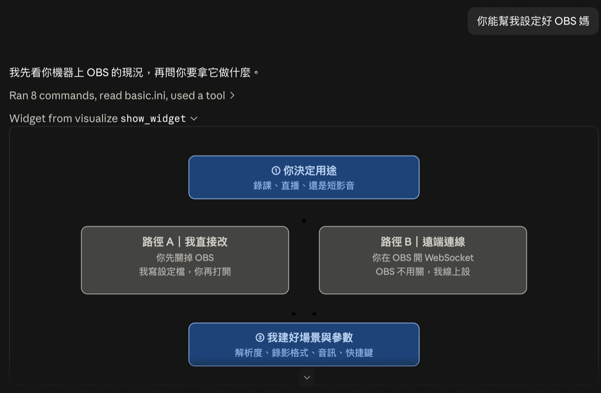
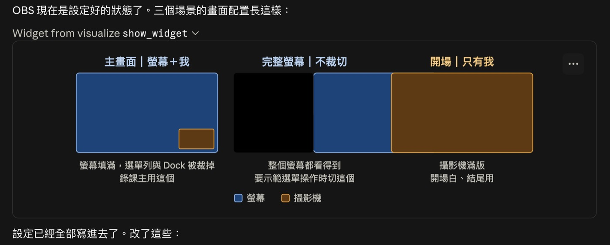

這篇在講什麼
這次出差帶新筆電，要重新設定 OBS 錄螢幕，而我忘記把桌機的設定記下來。以前這種事只能找教學影片，或是自己慢慢翻選項。這次我直接叫 AI 幫我設定好，全程沒有點過任何一個選項。這篇把整個過程攤開來講：AI 實際做了什麼、它做不到的四件事是什麼，以及我用什麼標準判斷「這件事能不能叫 AI 做」。重點不在 OBS，在於換一種面對操作問題的預設反應。
- 換了新電腦、重灌了系統，發現一堆軟體要重設，光想到就累
- 每次遇到不熟的軟體，第一個動作是去搜教學影片，看完二十分鐘還是卡在某個選項
- 已經在用 AI，但用途大多停在寫字、翻譯、整理資料，沒想過它能直接處理電腦上的設定
- 心裡有個疑問：什麼事可以放手給 AI，什麼事還是得自己來，界線到底在哪
- 一個真實案例的完整過程，看得到 AI 在每個決策點做了什麼判斷
- AI 在這類任務上的四個明確邊界，知道哪裡它會停下來要你出手
- 三個判斷問題，下次遇到任何軟體設定，可以自己判斷能不能交出去
- 一句可以直接拿去用的提問
忘記把設定記下來
出差前我換了新筆電。到了現場要錄線上課，打開 OBS，裡面是空的。
OBS 是免費開源的螢幕錄影軟體，功能很強，唯一的缺點是設定很麻煩。它預設什麼都沒有，場景要自己建、來源要自己加、解析度跟錄影格式都要自己調。第一次設定一個小時跑不掉。
而我忘記先把桌機的設定記下來。
這個處境我猜很多人熟悉。不只是 OBS，換電腦之後要重設的東西一長串，而且每一個都是「當初花了時間研究出來的結果」，現在要從頭再研究一次。
以前這種事只有兩條路：找教學影片跟著點，或是自己慢慢翻選項試出來。
我沒有走那兩條路
我直接問 AI 能不能幫我設定好。
這裡要先講清楚我用的環境。我用的是 Claude Code，它能讀寫我電腦上的檔案、能執行命令列指令。這是它跟一般聊天視窗最大的差別：聊天視窗只能告訴你該怎麼做，它可以直接做。
它的第一個動作不是給我步驟，是先去看現況。查完回報給我三件事：OBS 32.2.1 已經裝好，但設定是一小時前才生成的，只有一個空場景、零個來源。解析度是 3024×1964 基準、輸出 1662×1080，這是我 MacBook Pro 螢幕的原生比例，不是 16:9，錄出來每個平台都會加黑邊。攝影機只有內建的 FaceTime HD，麥克風是內建單聲道。
這段查證我一個字都沒教它。它自己去讀了 OBS 的設定檔、跑了系統的裝置查詢指令。
- 我上課不教 AI 工具，因為工具是 AI 該操作的 這篇是一次實作的現場記錄，那篇談的是這個立場本身：當工具的操作可以交出去，人該把學習的力氣放在哪裡
它先問我用途，才動手
查完現況，它沒有直接開始改，而是問了我兩個問題。
第一個問題是用途：這台 OBS 主要拿來做什麼。錄線上課程、錄短影音、直播，還是錄會議。
這個問題問得對。同樣是 OBS，錄線上課要的是螢幕為主加人臉小窗、要抓得到學員的聲音；錄短影音要的是人臉滿版加高畫質；直播要設串流金鑰跟位元率。用途不確定就動手，做完一定要重來。
第二個問題是施工路徑，它給了我兩條，並且說明了差別。

它推薦第一條，理由是能一次把場景、來源、參數全部建好；第二條的 WebSocket 有些參數 API 改不到。我選了第一條。
它沒有憑記憶寫參數
決定路徑之後，它做的第一件事讓我覺得這輪不會出錯。
OBS 的場景是存在一個 json 檔裡的，裡面每個來源都有一個代號。螢幕擷取叫什麼、攝影機叫什麼、系統音叫什麼，這些代號如果寫錯一個字，OBS 打開來場景就是空的，而且不會報錯，你只會看到一片黑。
它沒有直接寫。它先跑去 OBS 的程式檔案裡面，把裡面的字串撈出來比對，確認了這幾件事：
- 螢幕擷取是
screen_capture - 攝影機是
macos-avcapture，而不是網路上教學常寫的舊代號 - 麥克風是
coreaudio_input_capture，系統音是sck_audio_capture - 錄影格式
hybrid_mp4確實存在於這個版本 - 場景檔裡的 bounds 欄位存的是整數而不是字串
然後它去讀了 OBS 自己剛剛生成的那個空場景檔，照著它的欄位結構寫新的。
這一段是整個過程的關鍵。AI 寫東西最常見的失敗不是不會寫，是憑印象寫出「看起來對」的東西。它自己知道這個風險，所以先去找了真實來源。
它建了什麼
最後它建了三個場景，畫布統一 1920×1080。

主畫面是螢幕填滿加攝影機小窗放右下角。螢幕填滿會裁掉一點上下，剛好把選單列跟 Dock 裁掉，錄課反而乾淨。第二個場景是完整螢幕不裁切，要示範選單操作時切過去。第三個是攝影機滿版。
參數的部分，解析度改成 1920×1080 30fps，錄影格式從 hybrid_mov 改成 hybrid_mp4。這個格式的好處是當機或斷電不會壞檔，而且不用轉檔就能直接丟進剪輯軟體。編碼維持硬體加速，錄兩小時的課 CPU 不會滿載。存檔位置獨立開一個資料夾。
動手之前它把整包設定備份了一份，原本的空設定也留著沒刪。
我打開 OBS，就是設好的狀態。我一個選項都沒點過。
它做不到的四件事
這篇如果只寫到上面，就變成一篇吹捧文。真正有用的部分在這裡：它有四件事做不到，而這四件事就是邊界。
整個過程它沒有點過任何一個視窗。就算沒有這條規則，讓 AI 遙控滑鼠去點介面本來就是最慢最容易錯的做法。改檔案比模擬點擊可靠一個量級。
OBS 要錄螢幕、要用相機麥克風，macOS 會跳出權限請求，這個必須本人點。它能做的是提前告訴我會跳哪三個、哪一個給完要重開才生效。
它問我要錄什麼，是因為它真的不知道。這類問題不是它偷懶，是這個資訊只存在我腦子裡。
RecFormat2 這個欄位在兩個區段各出現一次，它的腳本只改到第一個。這個錯誤在目前的輸出模式下不影響錄影，但之後切換模式就會踩到。是它自己在驗收時抓出行號才發現的，然後補改。
第四點我覺得最重要。它不是不會出錯，是它出錯之後有辦法自己抓出來。差別在於有沒有驗收這一步，不在於第一次寫對。
- AI Agent 怎麼幫我們直接操作軟體？ 這篇是單一案例裡的邊界實測，那篇談的是這件事背後的連接方式，看完會知道為什麼有些軟體交得出去、有些交不出去
我怎麼判斷一件事能不能叫 AI 做
這次之後我把判斷收成三個問題。遇到任何軟體設定，照這三個問題問一次就知道。
第一，這個軟體的設定存在哪裡？
如果設定是存成純文字檔的，ini、json、yaml、plist 這幾種，AI 就可以直接讀寫。OBS 是，VS Code 是，Obsidian 是，終端機是，大部分開發工具都是。反過來，設定存在系統資料庫或加密檔裡的，它就只能給你步驟。
判斷方法很簡單，直接把這句話丟給它：
它找得到就可以交出去，找不到就回去點介面。後面那句是保險，讓它先講清楚再動手，你才有機會攔下不想要的改動。
第二，這件事有沒有哪一步一定要人授權？
權限、密碼、付款、對外送出，這幾類一定要人。有這種步驟不代表不能交給 AI，代表要把工作切開：AI 做前面的準備，你做那一下授權，AI 接著做後面的驗收。
第三，做錯了看不看得出來？
錯了能用命令列驗出來的，放心交。像這次的設定檔，改完抓一下欄位就知道對不對。錯了要等到三個月後才發現的，自己來。
心態上，這不是偷懶
我想把這件事講清楚。
這個心態不是偷懶喔。是覺得自己要學會的東西換了：要知道 AI 目前的能力與邊界，以及如何分配工作給 AI。
以前遇到不會的軟體，我要學的是那個軟體。翻選單、記快捷鍵、背參數。學會了，換一套軟體再學一次。
現在我要學的是判斷。哪些事它能整包做完，哪些事它會卡在哪一步，卡住的時候我該補上什麼。這個判斷是可以累積的，而且換一套軟體不用重學。
上面那三個問題就是我目前累積出來的判斷。它不會憑空出現，是每次交出去、看它怎麼做、看它在哪裡卡住，一次一次長出來的。
所以真正的差別不在少花了多少時間。是我現在遇到操作相關的事，第一個念頭已經變成「這件事能不能叫 AI 做」，而不是「我要花多久才學得會」。
- AI 越來越強，會不會哪天就不需要我了？：越交給 AI 的人越不怕被取代 這篇談的是單次任務怎麼判斷交不交，那篇談的是長期一直交出去之後，人自己會變成什麼樣子
想看更多這種實作現場
我每個月固定辦兩場免費線上講座，主題輪流，內容大多是這種「真的做過一次，然後把判斷留下來」的東西。場次會先在 LINE 社群公布。
加入 LINE 社群，講座場次與連結會在開課前公布。